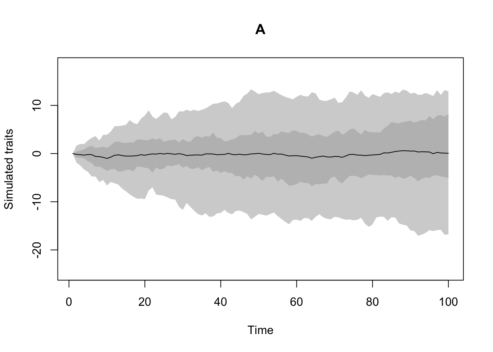
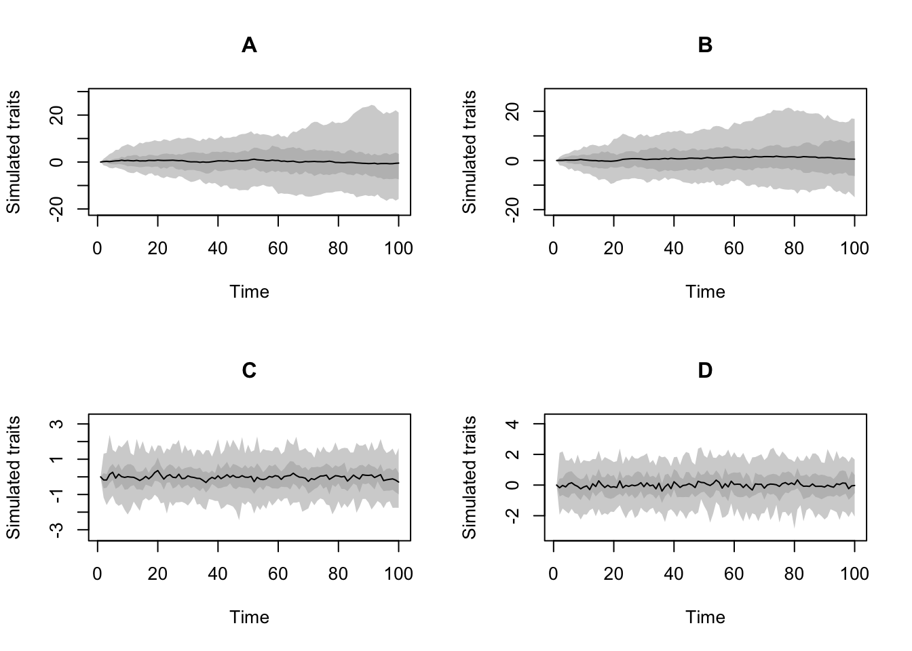

3 Making trait processes with make.traits()
3.1 The process (process)
The function make.traits allows you to design the process of a trait or a set of traits.
Here, the process of a trait designates the rules to generate the trait through time while simulating a phylogeny.
This process can depend on the previous state in the tree (i.e. the trait of the ancestor) and the branch length to the descendant.
One classic example is the Brownian motion process (or Weiner process).
Note that it can depend on both the ancestor and the branch length but does not necessary needs (i.e. the process can be only based on the previous state or only on branch length or on neither).
Trait processes in dads are functions that must always intake the following arguments by default.
x0: the previous trait value(s)edge.length: the branch length value...: a placeholder for any extra arguments
For example, the following function would be a valid process (though not dependent on either the previous state nor the branch length):
Note that the argument
edge.lengthis set to1by default. In general we highly recommend to set all arguments butx0to a default value (this really helps the speeding up thedadsfunction).
On the other hand, the following process (a unidimensional Brownian motion) is incorrect (it’s missing edge.length and ...):
The dads package proposes inbuilt processes, namely a multidimensional Brownian motion (BM.process) or a a multidimensional Ornstein-Uhlenbeck process (OU.process).
You can find the list of implemented process by looking at the ?trait.process manual page in R.
Once a process is chosen, you can feed it to the make.traits function:
This creates "dads" "traits" objects that you can print, and visualise using the plot function:
## [1] "dads" "traits"## ---- dads traits object ----
## 1 trait for 1 process (A) with one starting value (0).
Note that you can see the multiple options for plotting the trait process by looking at ?plot.dads manual. Furthermore, you can look at what’s actually in the object using:
## $A
## $A$process
## function (x0, edge.length = 1, Sigma = diag(length(x0)), ...)
## {
## return(t(MASS::mvrnorm(n = 1, mu = x0, Sigma = Sigma * edge.length,
## ...)))
## }
## <bytecode: 0x7fc142b2a548>
## <environment: namespace:dads>
##
## $A$start
## [1] 0
##
## $A$trait_id
## [1] 1As traits can get more and more complex, the automatic printing of its summary allows for a easier display of what’s in the traits object.
Note that it is possible to make "traits" objects with multiple processes (that can be the same):
## 4 traits: two BM, one OU and one normal non process
four_traits <- make.traits(process = c(BM.process,
BM.process,
OU.process,
no.process))
four_traits## ---- dads traits object ----
## 4 traits for 4 processes (A, B, C, D) with one starting value (0).You can visualise them individually using the trait argument in plot.dads:
## Plot options (4 plots in one window)
par(mfrow = c(2,2))
plot(four_traits, trait = 1)
plot(four_traits, trait = 2)
plot(four_traits, trait = 3)
plot(four_traits, trait = 4)
3.2 The number of traits n and the starting values start
Two further important arguments are n the number of traits per process and start the starting values for all traits.
By default they are set to n = 1 and start = 0.
This means that make.traits will assume that your processes are always unidimensional by default and that they always start with the value 0.
It is however possible to change these values.
For example you can use the following to create a three dimensional Brownian motion with each dimensions starting with the value 1:
## ---- dads traits object ----
## 3 traits for 1 process (A:3) with one starting value (1).Or the following with each dimensions starting with different values (respectively 1, 2 and 3):
## ---- dads traits object ----
## 3 traits for 1 process (A:3) with different starting values (1,2,3).Note that the number of traits are distributed per processes. If the traits contains multiple process, the number of traits are distributed per processes:
## ---- dads traits object ----
## 6 traits for 2 processes (A:3, B:3) with one starting value (0).## one 1D processes (BM) and one 4D process (OU)
make.traits(c(BM.process, OU.process), n = c(1, 4))## ---- dads traits object ----
## 5 traits for 2 processes (A:1, B:4) with one starting value (0).And starting values are distributed for all the traits or for the traits one by one:
## two 3D processes (BM and OU) starting with 1
make.traits(c(BM.process, OU.process), n = 3, start = 1)## ---- dads traits object ----
## 6 traits for 2 processes (A:3, B:3) with one starting value (1).## two 3D processes (BM and OU) starting with values 1 to 6
make.traits(c(BM.process, OU.process), n = 3, start = 1:6)## ---- dads traits object ----
## 6 traits for 2 processes (A:3, B:3) with different starting values (1,2,3,4,5,6).## two 3D processes (BM and OU) with the two first ones starting
## with 1 and the 4 other ones with the default (0)
make.traits(c(BM.process, OU.process), n = 3, start = c(1,1))## Warning in make.traits(c(BM.process, OU.process), n = 3, start = c(1, 1)): Only
## the first 2 starting values were supplied for a required 6 traits. The missing
## start values are set to 0.## ---- dads traits object ----
## 6 traits for 2 processes (A:3, B:3) with different starting values (1,1,0,0,0,0).3.3 Extra argument for the processes with process.args
You can also feed extra arguments to your process(es) functions. For example, the inbuilt process no.process (that is just a number generator not based on the previous value x0 or the branch length) can intake a specific random number generator as a function:
## no process trait using the normal distribution (default)
make.traits(no.process, process.args = list(fun = rnorm))## ---- dads traits object ----
## 1 trait for 1 process (A) with one starting value (0).
## process A uses the following extra argument: fun;## no process trait using the uniform distribution
## bounded between 1 and 100
make.traits(no.process, process.args = list(fun = runif, min = 1, max = 100))## ---- dads traits object ----
## 1 trait for 1 process (A) with one starting value (0).
## process A uses the following extra arguments: fun,min,max;You can also add multiple extra arguments for multiple processes giving them as a list.
## Two traits with no process:one normal and one uniform (1,100)
make.traits(process = c(no.process, no.process),
process.args = list(list(fun = rnorm),
list(fun = runif, min = 1, max = 100)))## ---- dads traits object ----
## 2 traits for 2 processes (A, B) with one starting value (0).
## process A uses the following extra argument: fun;
## process B uses the following extra arguments: fun,min,max;If one process do not need extra argument you must still give it and extra NULL process argument:
## Three traits with no process:
## one default, one lognormal and one uniform (1,100)
make.traits(process = c(no.process, no.process, no.process),
process.args = list(## Extra arguments for the first process (none)
list(NULL),
## Extra arguments for the second process
list(fun = rlnorm),
## Extra arguments for the third process
list(fun = runif, min = 1, max = 100)))## ---- dads traits object ----
## 3 traits for 3 processes (A, B, C) with one starting value (0).
## process B uses the following extra argument: fun;
## process C uses the following extra arguments: fun,min,max;3.4 Naming the traits with trait.names
As traits become more and more complex, it can be useful to give clearer names to each process.
This is easily done using the trait.names argument that attributes one name per process:
## A simple trait with a proper name
simple_trait <- make.traits(trait.names = "1D Brownian Motion")
simple_trait## ---- dads traits object ----
## 1 trait for 1 process (1D Brownian Motion) with one starting value (0).This becomes more useful if we use the complex example above:
## Three named traits with no process:
## one default, one lognormal and one uniform (1,100)
make.traits(process = c(no.process, no.process, no.process),
process.args = list(## Extra arguments for the first process (none)
list(NULL),
## Extra arguments for the second process
list(fun = rlnorm),
## Extra arguments for the third process
list(fun = runif, min = 1, max = 100)),
## Naming each trait
trait.names = c("Normal", "LogNormal", "Uniform(1,100)"))## ---- dads traits object ----
## 3 traits for 3 processes (Normal, LogNormal, Uniform(1,100)) with one starting value (0).
## process LogNormal uses the following extra argument: fun;
## process Uniform(1,100) uses the following extra arguments: fun,min,max;3.5 Combining multiple traits with add
You can also add traits to already existing trait objects using the simple add option.
This option just intakes a "dads" "traits" object and the additional process(es) will be added to it. For example:
## Creating on simple default Brownian motion
one_process <- make.traits(trait.names = "BM")
## Creating a new trait (a 3D OU.process)
## and adding the previous one
two_processes <- make.traits(OU.process, n = 3, add = one_process,
trait.names = "3D OU")
## Only one process
one_process## ---- dads traits object ----
## 1 trait for 1 process (BM) with one starting value (0).## ---- dads traits object ----
## 4 traits for 2 processes (BM:1, 3D OU:3) with one starting value (0).3.6 Testing the traits with test
This bit is more for development.
We highly suggest leaving test = TRUE so that make.traits returns an error if a process or its additional arguments (process.args) are not formatted correctly.
make.traits will error if the trait cannot be directly passed to dads.
However, in some specific cases (again, probably mainly for development and debugging) it could be useful to skip the tests using test = FALSE.
3.7 Templates for making your very own process
As detailed above, any process of your own design will work as long as it is a function that takes at least the arguments x0 and edge.length.
You can be imaginative and creative when designing your own process but here are two detailed example functions for a unidimensional Brownian Motion and Ornstein-Uhlenbeck process that you can use for a start (or not).
Remember it is good practice for dads processes to set all the arguments but x0 with default values (just in case).
Also, note that the functions below are not equal to the already implemented BM.process and OU.process but are rather generalised/simplified version that you can use as a template
3.7.1 A simple Brownian Motion process template
## A simple Brownian motion process
my.BM.process <- function(x0, edge.length = 1, sd = 1, ...) {
## Drawing a random number from a normal distribution
## with x0 as the and a given standard deviation
## and depending on branch (edge) length
result <- rnorm(n = 1, mean = x0, sd = sd * edge.length)
## Return the number
return(result)
}3.7.2 A simple Ornstein-Uhlenbeck process template
## A simple Ornstein-Uhlenbeck motion process
my.OU.process <- function(x0, edge.length = 1, var = 1, alpha = 1, ...) {
## Calculate the mean based on alpha
mean <- x0 * exp(-alpha)
## Calculate the standard deviation based on alpha and the variance
sd <- sqrt(var/(2 * alpha) * (1 - exp(-2 * alpha)))
## Draw a random number from a normal distribution
## using this mean and standard deviation
## and depending on branch (edge) length
result <- rnorm(n = 1, mean = mean, sd = sd * branch.length)
## Return the number
return(result)
}